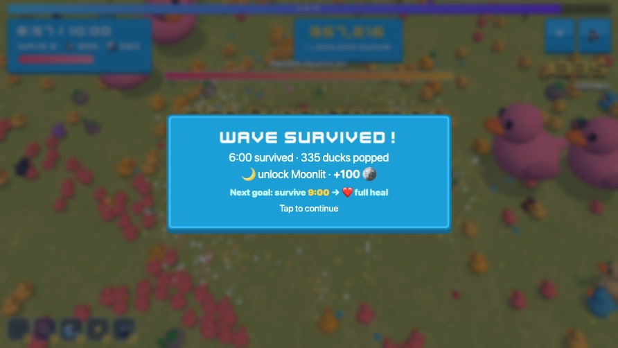

Survive a Million Ducks update: Wave Survived and weapon evolutions

Ten minutes against a million rubber ducks is a long time, so this update gives every run clear checkpoints and bigger moments along the way.
What's new
- Wave Survived. Make it to 3, 6 and 9 minutes and the arena pauses for a quick celebration: nearby ducks are cleared and you get a growing coin bonus, plus a preview of your next goal.
- The Jackpot Parade. At 1:30 a golden flock storms in for a few seconds of giant loops.
- Weapon evolutions. Max out a weapon and it can evolve into Rainbow Storm, Giant Mallets, Tidal Wave or Thunder Sponge.
- Faster retries. Play again drops you straight back into the arena, and permanent upgrades are right on the results screen.
- Friendlier first runs. New players get a gentler start until they survive five minutes once.
Made by Holiday Play Studio, a small indie studio. We design our games with the help of AI coding tools (Claude Code), then play-test and polish them by hand. The games are free to play in your browser.